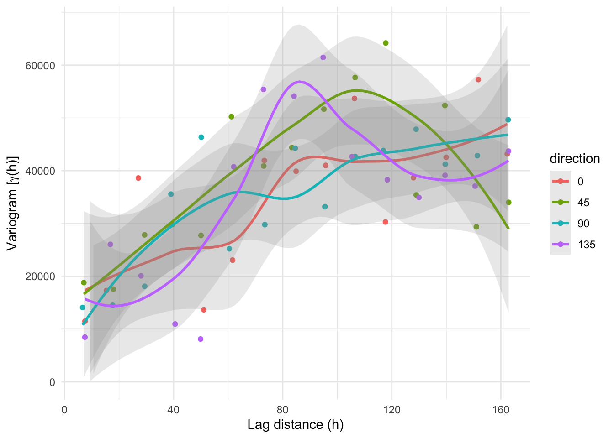
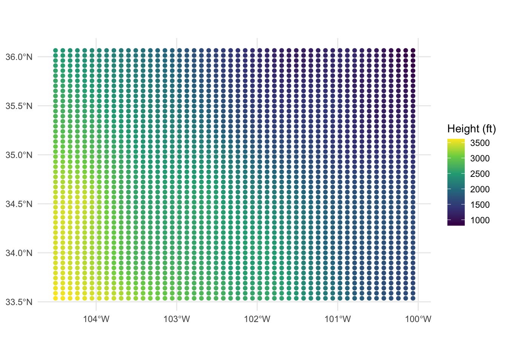

Tuesday November 15, 2022
“Statistics is such a powerful language for describing data in ways that reveal nothing about their causes. Of course statistics is powerful for revealing causes as well. But it takes some care. Like the difference between talking and making sense.” - Richard McElreath
Today
- Fitting a variogram model to the sample variogram
- Creating an interpolated surface with the method of kriging
Fitting a variogram model to the sample variogram
Some years ago there were three nuclear waste repository sites being proposed in Nevada, Texas, and Washington. The proposed site needed to be large enough for more than 68,000 high-level waste containers placed underground, about 9 m (~30 feet) apart, in trenches surrounded by salt.
In July of 2002 the Congress approved Yucca Mountain, Nevada, as the nation’s first long-term geological repository for spent nuclear fuel and high-level radioactive waste.
The site must isolate the waste for 10,000 years. Leaks could occur, however, or radioactive heat could cause tiny quantities of water in the salt to migrate toward the heat until eventually each canister is surrounded by 22.5 liters of water (~6 gallons). A chemical reaction of salt and water can create hydrochloric acid that might corrode the canisters. The piezometric-head data at the site were obtained by drilling a narrow pipe into the aquifer and letting water seeks its own level in the pipe (piezometer).
The head measurements, given in units of feet above sea level, are from drill stem tests and indicate the total energy of the water in units of height. The higher the head height, the greater the potential energy. Water flows away from areas of high potential energy with aquifer discharge proportional to the gradient of the piezometric head. The data are in wolfcamp.csv on my website.
Examine the observed data for trends and check to see if the observations are adequately described by a normal distribution.
Import the data as a data frame from the csv file.
L <- "http://myweb.fsu.edu/jelsner/temp/data/wolfcamp.csv"
wca.df <- readr::read_csv(L, show_col_types = FALSE)Create a simple feature data frame and make a map showing the locations and the values for the head heights.
wca.sf <- sf::st_as_sf(x = wca.df,
coords = c("lon", "lat"),
crs = 4326)
tmap::tmap_mode("view")## tmap mode set to interactive viewingtmap::tm_shape(wca.sf) +
tmap::tm_dots("head")You will use the spatial coordinates to model the spatial autocorrelation and to remove any spatial trends. So you include them as attributes in your spatial data frame.
XY <- wca.sf |>
sf::st_coordinates()
wca.sf$X <- XY[, 1]
wca.sf$Y <- XY[, 2]Are all observations at different locations? Duplicate coordinates might be due to an error or they might represent multiple measurements at a location.
You check for duplicates with the {base} duplicated() function applied to the geometry field.
wca.sf$geometry |>
duplicated()## [1] FALSE FALSE FALSE FALSE FALSE FALSE FALSE FALSE FALSE FALSE FALSE FALSE
## [13] FALSE FALSE FALSE FALSE FALSE FALSE FALSE FALSE FALSE FALSE FALSE FALSE
## [25] FALSE FALSE FALSE FALSE FALSE FALSE TRUE FALSE FALSE FALSE FALSE FALSE
## [37] FALSE FALSE FALSE FALSE FALSE FALSE FALSE FALSE FALSE FALSE FALSE FALSE
## [49] FALSE FALSE FALSE FALSE FALSE FALSE FALSE FALSE FALSE FALSE FALSE FALSE
## [61] FALSE FALSE FALSE FALSE FALSE FALSE FALSE FALSE FALSE FALSE FALSE FALSE
## [73] FALSE FALSE FALSE FALSE FALSE FALSE FALSE FALSE FALSE FALSE FALSE FALSE
## [85] FALSEObservation 31 is a location that already has an observed head height.
You remove this observation from the data frame.
wca.sf <- wca.sf |>
dplyr::filter(!duplicated(geometry))
wca.sf$geometry |>
duplicated() |>
any()## [1] FALSESummarize the information in the spatial data frame.
wca.sf |>
summary()## head geometry X Y
## Min. :1024 POINT :84 Min. :-104.5 Min. :33.51
## 1st Qu.:1543 epsg:4326 : 0 1st Qu.:-102.4 1st Qu.:33.87
## Median :1787 +proj=long...: 0 Median :-101.7 Median :34.26
## Mean :1998 Mean :-101.7 Mean :34.55
## 3rd Qu.:2541 3rd Qu.:-100.8 3rd Qu.:35.31
## Max. :3571 Max. :-100.0 Max. :36.09wca.sf |>
sf::st_bbox(wca.sf)## xmin ymin xmax ymax
## -104.55 33.51 -100.02 36.09There are 84 well sites bounded between longitude lines 104.55W and 100.02W and latitude lines 33.51N and 36.09N.
The data values are summarized. The values are piezometric head heights in units of feet.
library(ggplot2)
ggplot() +
geom_sf(data = wca.sf,
mapping = aes(color = head)) +
scale_color_viridis_c() +
labs(col = "Height (ft)") +
theme_minimal()
There is a clear trend in head heights with the highest potential energy (highest heights) over the southwest (yellow) and lowest over the northeast (blue).
Compute and plot the empirical variogram using the variogram() function from the {gstat} package.
library(gstat)
variogram(head ~ 1,
data = wca.sf) |>
plot()
The continuously increasing set of variances with little fluctuation results from the data trend you saw in the map. There are at least two sources of variation in any set of geostatistical data: trend and spatial autocorrelation. Trend is modeled with a smooth curve and autocorrelation is modeled with the variogram.
Note: since the spatial coordinates are unprojected (decimal latitude/longitude) great circle distances are used and the units are kilometers.
You compute and plot the variogram this time with the trend removed. You replace the 1 with X + Y on the right hand side of the formula. The variogram is then computed on the residuals from the linear trend model.
variogram(head ~ X + Y,
data = wca.sf) |>
plot()
Here you see an increase in the variance with lag distance out to about 100 km, but then the values fluctuate about a variance of about 41000 (ft\(^2\)).
You save the variogram object computed on the residuals.
wca.v <- variogram(head ~ X + Y,
data = wca.sf)You then use this information contained in the variogram object to anticipate the type of variogram model.
df <- wca.v |>
as.data.frame()
( p <- ggplot(data = df,
mapping = aes(x = dist, y = gamma)) +
geom_point() +
geom_smooth() +
scale_y_continuous(limits = c(0, NA)) +
ylab(expression(paste("Variogram [", gamma,"(h)]"))) +
xlab("Lag distance (h)") +
theme_minimal() )## `geom_smooth()` using method = 'loess' and formula 'y ~ x'
The blue line is a least-squares regression smoother through the variogram estimates. The fact that it is not a flat horizontal line indicates spatial autocorrelation in the residuals (distinct from the first-order trend).
Directional variograms
The assumption of isotropy implies the same spatial autocorrelation function in all directions.
You compute variograms using observational pairs located along the same orientation to examine this assumption. Instead of considering all observational pairs within a lag distance \(h\) and lag tolerance \(\delta h\), you consider only pairs within a directional segment.
This is done with the alpha = argument specifying the direction in plane (x,y), in positive degrees clockwise from positive y (North): alpha = 0 for direction North (increasing y), alpha = 90 for direction East (increasing x).
Here you specify four directions (north-south-0, northeast-southwest-45, east-west-90, and southeast-northeast-135) and compute the corresponding directional variograms.
wca.vd <- variogram(head ~ X + Y,
data = wca.sf,
alpha = c(0, 45, 90, 135))
df <- wca.vd |>
as.data.frame() |>
dplyr::mutate(direction = factor(dir.hor))
ggplot(data = df,
mapping = aes(x = dist, y = gamma, color = direction)) +
geom_point() +
geom_smooth(alpha = .2) +
scale_y_continuous(limits = c(0, NA)) +
ylab(expression(paste("Variogram [", gamma,"(h)]"))) +
xlab("Lag distance (h)") +
theme_minimal()## `geom_smooth()` using method = 'loess' and formula 'y ~ x'
The four variograms all have a similar shape and there is large overlap in the uncertainty bands surrounding the smooth curves so you conclude that the assumption of isotropy is reasonable.
Fit a variogram model to the empirical variogram
You are now ready to fit a variogram model to the empirical variogram. This amounts to fitting a parametric curve through the set of points that make up the empirical variogram.
Start by plotting the (omni-directional) empirical variogram saved in object p.
p## `geom_smooth()` using method = 'loess' and formula 'y ~ x'
The shape of the blue line gives you an idea of the type of variogram family of models you should consider.
Now you can guess at a family for the variogram model and eyeball the parameters. A spherical variogram model has a nearly linear increase in variances with lag distance before an abrupt flattening so that is a good choice.
The parameters for the model can be estimated from the graph as follows.
p +
geom_hline(yintercept = c(12000, 45000), color = "red") +
geom_vline(xintercept = 100, color = "red") +
geom_segment(aes(x = 0, y = 0, xend = 0, yend = 12000,), arrow = arrow(angle = 15, length = unit(.3, "cm"))) +
geom_label(aes(x = 15, y = 11000, label = "nugget")) +
geom_segment(aes(x = 0, y = 12000, xend = 0, yend = 45000,), arrow = arrow(angle = 15, length = unit(.3, "cm"))) +
geom_label(aes(x = 10, y = 44000, label = "sill")) +
geom_segment(aes(x = 0, y = 47000, xend = 100, yend = 47000,), arrow = arrow(angle = 15, length = unit(.3, "cm"))) +
geom_label(aes(x = 50, y = 48000, label = "range"))## `geom_smooth()` using method = 'loess' and formula 'y ~ x'
The three parameters used in fitting a variogram model are nugget, sill, and range.
Nugget (nugget, nugget variance, or nugget effect): The height of the variogram at zero lag. The nugget is the variation in the values at the observation locations without regard to spatial variation. Related to the observation (or measurement) precision.
Sill: The height of the variogram at which the values are uncorrelated. The sill is indicated by the height of the plateau in the variogram.
Range: The distance beyond which the values are uncorrelated. The range is indicated by distance along the horizontal axis from zero lag until the plateau in the variogram.
Other terms: (1) Relative nugget effect: The ratio of the nugget to the sill expressed as a percentage. (2) Lag distance: Relative distance between observation locations.
From the figure you estimate the sill at 44000 ft^2, the nugget at 12000 ft^2 and the range at 100 km.
To fit a model to the empirical variogram you start with the vgm() function that sets the curve family (here spherical) and the initial parameter values. You save result in an object called wca.vmi. The function needs the partial sill (psill = argument) as the difference between the sill and the nugget.
wca.vmi <- vgm(model = "Sph",
psill = 32000,
range = 100,
nugget = 12000)
wca.vmi## model psill range
## 1 Nug 12000 0
## 2 Sph 32000 100Next you apply the function fit.variogram(), which uses the method of weighted least squares to improve the parameter estimates from the set of initial estimates. The function takes the empirical variogram and the set of initial estimates as object = and model =, respectively.
wca.vm <- fit.variogram(object = wca.v,
model = wca.vmi)
wca.vm## model psill range
## 1 Nug 9812.335 0.0000
## 2 Sph 34851.456 106.9623Note: Ordinary least squares is not an appropriate method for fitting a variogram model to the empirical variogram because the semivariances are correlated across the lag distances and the precision on the estimates depends on the number of site pairs for a given lag.
The output table shows the nugget and spherical model. The nugget is 9812 ft^2 and the partial sill for the spherical model is 34851 ft^2 with a range of 107 km. These values are close to your initial estimates.
To check the model and fit plot them together with the plot() method.
plot(wca.v, wca.vm)
The blue line is the variogram model and the points are the empirical variogram values.
Note that the fit.variogram() function will find the optimal fit even if the initial values are not very good. Here you lower the partial sill to 10000 ft^2, reduce the range to 50 km and set the nugget to 8000 ft^2.
wca.vmi2 <- vgm(model = "Sph",
psill = 10000,
range = 50,
nugget = 8000)
wca.vm2 <- fit.variogram(object = wca.v,
model = wca.vmi2)
wca.vm2## model psill range
## 1 Nug 9812.412 0.0000
## 2 Sph 34851.684 106.9645The initial values are poor but good enough for the fit.variogram() function to find the optimal model.
Compare the spherical model to a Gaussian and an exponential model.
wca.vmi3 <- vgm(model = "Gau",
psill = 30000,
range = 30,
nugget = 10000)
wca.vm3 <- fit.variogram(object = wca.v,
model = wca.vmi3)
wca.vmi4 <- vgm(model = "Exp",
psill = 30000,
range = 10,
nugget = 10000)
wca.vm4 <- fit.variogram(object = wca.v,
model = wca.vmi4)
plot(wca.v, wca.vm3)
plot(wca.v, wca.vm4)
The Gaussian model has a S-shaped curve (sigmodial) indicating more spatial autocorrelation at close distances. The exponential model has no plateau. Both models fit the empirical variogram values reasonably well.
In practice, the choice often makes very little difference in the quality of the spatial interpolation.
On the other hand, it is possible to optimize over all sets of variogram models and parameters using the autofitVariogram() function from the {automap} package. The package requires the data to be of S4 class but uses the functions from the {gstat} package.
Here you use the function on the Wolfcamp aquifer data.
wca.sp <- as(wca.sf, "Spatial")
wca.vm5 <- automap::autofitVariogram(formula = head ~ X + Y,
input_data = wca.sp)
plot(wca.vm5)
The automatic fitting results in a Matern model with Stein’s parameterization. The Matern family of variogram models has an additional parameter (besides the nugget, sill, and range) kappa that allows for local smoothing. With an extra parameter these models will generally outperform models with fewer parameters.
Creating an interpolated surface with the method of kriging
Kriging uses the variogram model together with the observed data to estimate values at any location of interest. The kriged estimates are a weighted average of the neighborhood values with the weights defined by the variogram model.
Estimates are often made at locations defined on a regular grid. Here you create a regular grid of locations within the boundary of the spatial data frame using the sf::st_make_grid() function. You specify the number of locations in the x and y direction using the argument n =. The what = "centers" returns the center locations of the grid cells as points.
grid.sfc <- sf::st_make_grid(wca.sf,
n = c(50, 50),
what = "centers")The result is a simple feature column (sfc) of points.
Plot the grid locations together with the observation locations.
sts <- USAboundaries::us_states()
tmap::tmap_mode("plot")## tmap mode set to plottingtmap::tm_shape(wca.sf) +
tmap::tm_bubbles(size = .25) +
tmap::tm_shape(grid.sfc) +
tmap::tm_dots(col = "red") +
tmap::tm_shape(sts) +
tmap::tm_borders()
Since there is a trend term you need to add the X and Y values to the simple feature column of the grid. First make it a simple feature data frame then using then add the columns with dplyr::mutate().
XY <- grid.sfc |>
sf::st_coordinates()
grid.sf <- grid.sfc |>
sf::st_as_sf() |>
dplyr::mutate(X = XY[, 1],
Y = XY[, 2])Next interpolate the aquifer heights to the grid locations. You do this with the krige() function. The first argument is the formula for the trend, the locations argument is the observed data locations from the simple feature data frame, the new data argument is the locations and independent variables (in this case the trend variables) and the model argument is the variogram model that you fit above.
wca.int <- krige(head ~ X + Y,
locations = wca.sf,
newdata = grid.sf,
model = wca.vm)## [using universal kriging]head(wca.int)## Simple feature collection with 6 features and 2 fields
## Geometry type: POINT
## Dimension: XY
## Bounding box: xmin: -104.5047 ymin: 33.5358 xmax: -104.0517 ymax: 33.5358
## Geodetic CRS: WGS 84
## var1.pred var1.var geometry
## 1 3618.148 36503.33 POINT (-104.5047 33.5358)
## 2 3594.685 36325.39 POINT (-104.4141 33.5358)
## 3 3571.307 36332.17 POINT (-104.3235 33.5358)
## 4 3546.016 35848.59 POINT (-104.2329 33.5358)
## 5 3520.252 34424.00 POINT (-104.1423 33.5358)
## 6 3494.375 31846.14 POINT (-104.0517 33.5358)The output says using universal kriging. This is because there is a trend and a variogram model.
The output is a simple feature data frame containing the interpolated values at the grid locations in the column labeled var1.pred. The interpolated uncertainty is given in the column labeled var1.var.
You plot the interpolated aquifer heights at the grid locations using functions from the {ggplot2} package.
ggplot() +
geom_sf(data = wca.int,
mapping = aes(col = var1.pred)) +
scale_color_viridis_c() +
labs(col = "Height (ft)") +
theme_minimal()
The trend captures the large scale feature while the variogram captures the local spatial autocorrelation. Together they produce an interpolated surface that matches exactly the values at the observation locations (when the nugget is fixed at zero).
Plot the uncertainty in the estimated interpolated values as the square root of the variance.
ggplot() +
geom_sf(data = wca.int,
mapping = aes(col = sqrt(var1.var))) +
scale_color_viridis_c(option = "plasma") +
labs(col = "Uncertainty (ft)") +
theme_minimal()
Areas with the largest uncertainty are in areas away from observations (northwest corner). This makes sense our knowledge of the aquifer comes from these observations.